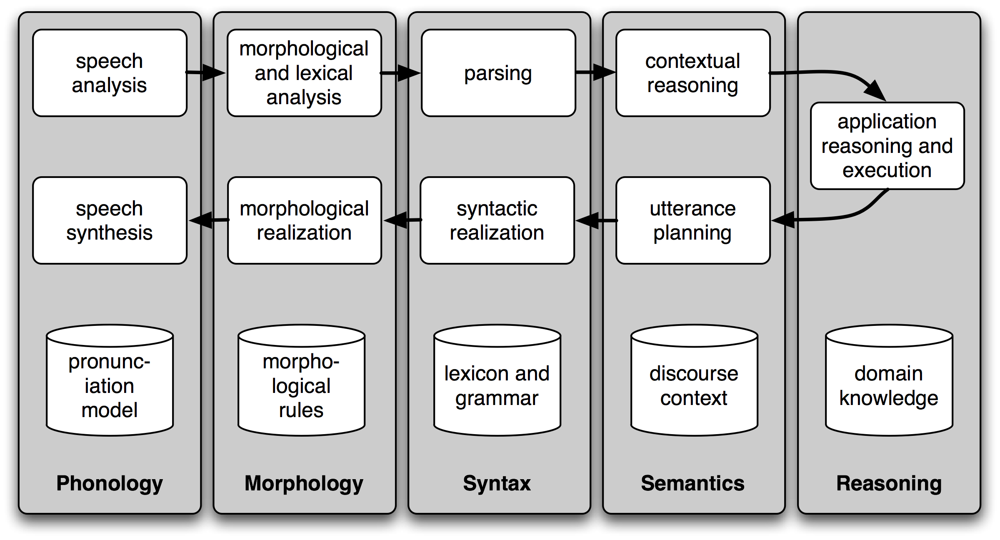

Natural Language Processing
Backbone of Human-Computer Interaction
Created by Dinesh Bhattarai
Artificial Intelligence
Natural Language Processing


Speech Recognition
- ngram Language Model
- Markov Model and HMM
- RNN and LSTM
- DeepLearning
ngram
- contiguous sequence of n items
- probabilistic language model based on (n-1) markov model
- predicts next item based on current n-gram sequence
Markov Process
- Finite State Machine
- Probability of next state based on current state
- $$ P(WORD = I) * P(WORD = enjoy | PREV = I) * P(word = coffee| PREV = enjoy) $$
Hidden Markov Model
An application of Markov Models using statistical methods
- Contains hidden states
- Defines how to learn the weights in Markov Matrix
- Uses: Classification, Clustering, Regression, etc.
Recurrent Neural Networks
Remember last prediction and give it as input to the network. Can remember only the latest information.

LSTM


Dialogue
Dialogue
Machine Translation
- Rule based
- Transfer based
- Interlingual
- Dictionary based
- Statistical
- Example based
- Hybrid MT
- Nueral MT
Rule Based
- Linguistic rules
- sentence analysis for word context
- terminologies dictionaries
Statistical
- Pattern matching
- trained on human translations
- terminologies dictionaries
Neural Based
DeepLearning
Language Modeling and Understanding
- Semantic Analysis
- Discourse Integration
- Pragmatic Analysis
Semantic Analysis
draw exact or dictionary meaning from text
Discourse Integration
Associate meaning of current sentence with previos sentences. Can also infer the meaning of next sentence.
Pragmatic Analysis
reinterpret semantic meaning with real-world meaning.
Where are we?
Machine Intelligence?
Some way in the middle of machine learning and consciousness
Way forward!
- NLTK (Python)
- deeplearning4j (Java)
- OpenNLP (Java)
- CoreNLP (Java)
- Gensim (document similarity)
- Spacy (high performance)